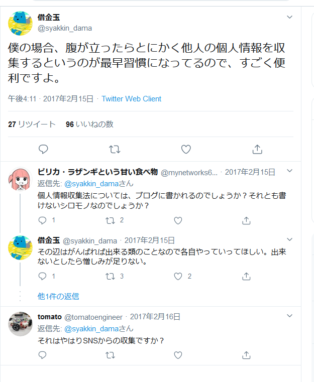
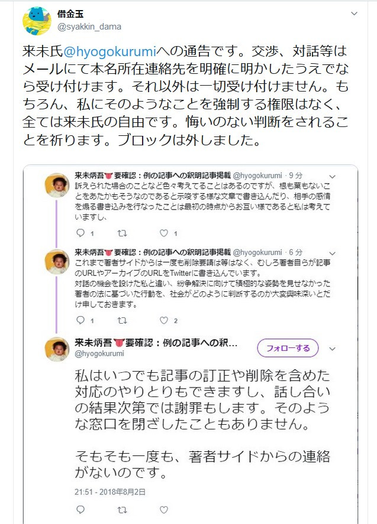
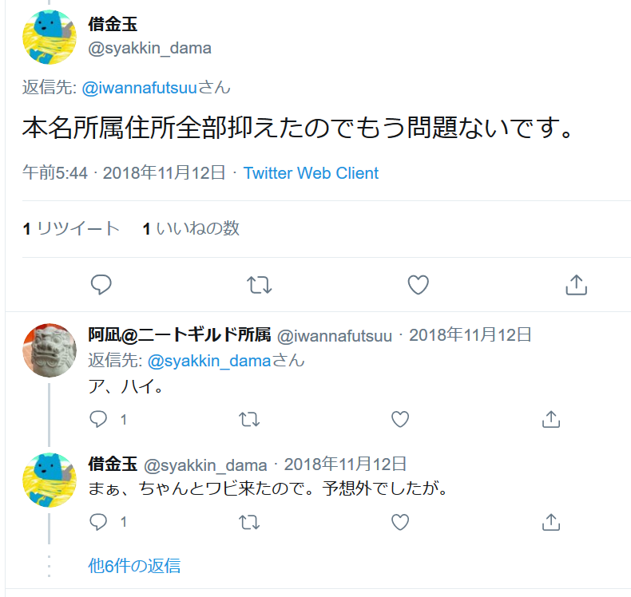
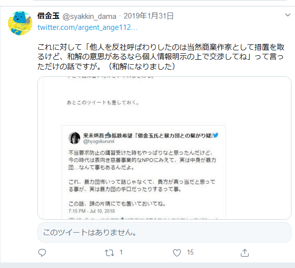

借金玉僕の場合、腹が立ったらとにかく他人の個人情報を収集するというのが最早習慣になってるので、すごく便利ですよ。
---

借金玉来未氏@hyogokurumiへの通告です。交渉、対話等はメールにて本名所在連絡先を明確に明かしたうえでなら受け付けます。それ以外は一切受け付けません。
---
もちろん、私にそのようなことを強制する権限はなく、全ては来未氏の自由です。悔いのない判断をされることを祈ります。ブロックは外しました。

借金玉本名所属住所全部抑えたのでもう問題ないです。
---

借金玉これに対して「他人を反社呼ばわりしたのは当然商業作家として措置を取るけど、
---
和解の意思があるなら個人情報明示の上で交渉してね」って言っただけの話ですが。（和解になりました）
